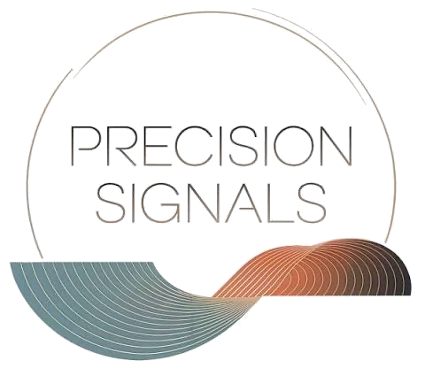

Physician-Scientist • Oncologist • AI Innovator
MD, MPH
Advancing human health through the convergence of medicine, data science, and artificial intelligence.
Dr. Sean Khozin is a physician-scientist and oncologist, internationally recognized for his leadership in leveraging data science, AI, machine learning, and real-world evidence to drive innovation in biomedical research, with a particular emphasis on oncology drug development.
A founding member of the FDA Oncology Center of Excellence, Dr. Khozin escaped the revolution in Iran and found his way to the United States, harmonizing his passion for patients and data into a career spanning startups, the FDA, Johnson & Johnson, and pioneering AI ventures, all while pursuing his love of music.
His work bridges the gap between cutting-edge technology and clinical care, with a focus on harnessing advanced analytics and AI to accelerate drug discovery, optimize therapeutic development, and improve patient outcomes.
Chief Executive Officer
Directing public health programs and pioneering initiatives focused on the development of AI foundation models in oncology.
Founder
Subsidiary of Phyusion
Advancing innovations at the nexus of biology, technology, and AI to accelerate drug discovery and optimize therapeutic development.
Research Affiliate
Focusing on novel applications of AI and machine learning technologies to accelerate drug discovery and optimize therapeutic development strategies.

Host
A podcast from the CEO Roundtable on Cancer, examining the hard problems in oncology and exploring practical solutions that connect science to patient impact.
Directing public health programs and pioneering AI foundation model initiatives in oncology.
Novel applications of AI/ML to accelerate drug discovery and optimize therapeutic development.
Led the restructuring and acquisition of the precision oncology enterprise leveraging real-world data and analytics.
Implemented cutting-edge data science solutions supporting the development of innovative medicines and vaccines.
Established the FDA's first data science and technology incubator under special federal authorities.
Helped build and launch the FDA's Oncology Center of Excellence, shaping the agency's approach to oncology drug regulation and review.
Conducted clinical research in oncology at the U.S. National Cancer Institute.
Pioneering TechBio company developing telemedicine, point-of-care data visualization, and advanced analytical systems.
Board-certified oncologist. Fellowship training following internal medicine residency.
Doctor of Medicine, University of Maryland School of Medicine. Master of Public Health, George Washington University. BS, University of Maryland.
Information Exchange and Data Transformation (INFORMED) was launched in 2015 at the U.S. FDA with special authorities from the Department of Health and Human Services.
As a technology and data science incubator, INFORMED was designed as a public-private collaboration sandbox to de-risk innovations with transformative potential in biomedical research and therapeutic development.
The effort was instrumental in establishing the foundation for the use of real-world evidence, digital health solutions, and AI/ML in drug development and regulatory decision-making.
Pioneered frameworks for integrating real-world data into regulatory decision-making.
Advanced digital health solutions, including smart devices and decentralized clinical trials.
Established foundations for AI/ML adoption across the product life cycle.
Dr. Khozin's research spans regulatory science, clinical trial methodology, and data science, with a focus on modernizing how evidence is generated and applied in cancer drug development.
Featured Essay
The Confluence of Math, Music, and Medicine
How physiological state changes can be represented musically — the composition Perpetual Drift proposes that transitions in human physiology, detectable through computational methods, can also be heard as shifts in tonality and dissonance.
Read on Substack →A nonprofit bridging scientific discovery and clinical application in oncology, promoting equitable cancer care and fostering the translation of new therapies through education and global collaboration.
Visit website →An AI biotech company using machine learning and federated learning to accelerate drug discovery, optimize clinical trials, and develop AI-powered diagnostics from multimodal patient data.
Visit website →A personalized health company using AI to analyze the gut microbiome, delivering actionable insights on diet and lifestyle to help people identify root causes of chronic health issues.
Visit website →A Stanford spinout generating publication-grade real-world evidence in minutes using AI, closing the evidence gap where only 14% of daily medical decisions are backed by high-quality data.
Visit website →An international multi-stakeholder advocacy organization promoting the responsible development, regulation, and adoption of AI-powered healthcare solutions across industry, government, and academia.
Visit website →A global nonprofit advancing the ethical, effective, and equitable use of digital medicine by convening diverse stakeholders and producing open-source resources used by the FDA, NIH, and top pharma companies.
Visit website →A biotech company developing precision oncology therapies through functional cytometric profiling, testing living tumor samples directly against therapeutic agents to treat cancers with minimal toxicity.
Visit website →Interested in collaborating on research, speaking engagements, or advancing AI-driven innovation in healthcare?